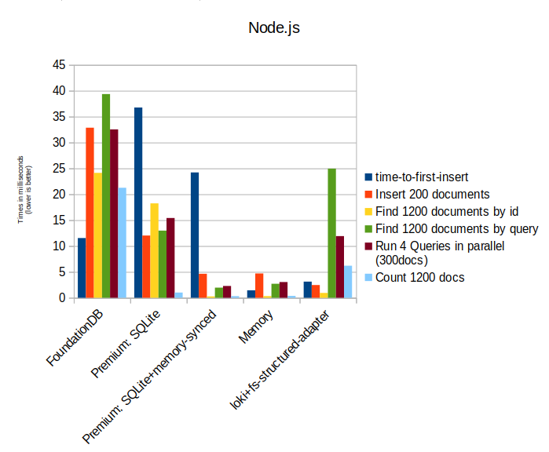

Node.js Database
RxDB is a fast, reactive realtime NoSQL database made for JavaScript applications like Websites, hybrid Apps, Electron-Apps, Progressive Web Apps and Node.js. While RxDB was initially created to be used with UI applications, it has been matured and optimized to make it useful for pure server-side use cases. It can be used as embedded, local database inside of the Node.js JavaScript process, or it can be used similar to a database server that Node.js can connect to. The RxStorage layer makes it possible to switch out the underlying storage engine which makes RxDB a very flexible database that can be optimized for many scenarios.
Persistent Database
To get a "normal" database connection where the data is persisted to a file system, the RxDB real time database provides multiple storage implementations that work in Node.js.
The FoundationDB storage connects to a FoundationDB cluster which itself is just a distributed key-value engine. RxDB adds the NoSQL query-engine, indexes and other features on top of it.
It scales horizontally because you can always add more servers to the FoundationDB cluster to increase the capacity.
Setting up a RxDB database is pretty simple. You import the FoundationDB RxStorage and tell RxDB to use that when calling createRxDatabase:
import { createRxDatabase } from 'rxdb';
import { getRxStorageFoundationDB } from 'rxdb/plugins/storage-foundationdb';
const db = await createRxDatabase({
name: 'exampledb',
storage: getRxStorageFoundationDB({
apiVersion: 620,
clusterFile: '/path/to/fdb.cluster'
})
});
// add a collection
await db.addCollections({
users: {
schema: mySchema
}
});
// run a query
const result = await db.users.find({
selector: {
name: 'foobar'
}
}).exec();
Another alternative storage is the SQLite RxStorage that stores the data inside of a SQLite filebased database. The SQLite storage is faster than FoundationDB and does not require to set up a cluster or anything because SQLite directly stores and reads the data inside of the filesystem. The downside of that is that it only scales vertically.
import { createRxDatabase } from 'rxdb';
import {
getRxStorageSQLite,
getSQLiteBasicsNode
} from 'rxdb-premium/plugins/storage-sqlite';
import sqlite3 from 'sqlite3';
const myRxDatabase = await createRxDatabase({
name: 'path/to/database/file/foobar.db',
storage: getRxStorageSQLite({
sqliteBasics: getSQLiteBasicsNode(sqlite3)
})
});Because the SQLite RxStorage is not free and you might not want to set up a FoundationDB cluster, there is also the option to use the LokiJS RxStorage together with the filesystem adapter. This will store the data as plain json in a file and load everything into memory on startup. This works great for small prototypes but it is not recommended to be used in production.
import { createRxDatabase } from 'rxdb';
const LokiFsStructuredAdapter = require('lokijs/src/loki-fs-structured-adapter.js');
import { getRxStorageLoki } from 'rxdb/plugins/storage-lokijs';
import sqlite3 from 'sqlite3';
const myRxDatabase = await createRxDatabase({
name: 'path/to/database/file/foobar.db',
storage: getRxStorageLoki({
adapter: new LokiFsStructuredAdapter()
})
});Here is a performance comparison chart of the different storages (lower is better):

RxDB as Node.js In-Memory Database
One of the easiest way to use RxDB in Node.js is to use the Memory RxStorage. As the name implies, it stores the data directly in-memory of the Node.js JavaScript process. This makes it really fast to read and write data but of course the data is not persisted and will be lost when the nodejs process exits. Often the in-memory option is used when RxDB is used in unit tests because it automatically cleans up everything afterwards.
import { createRxDatabase } from 'rxdb';
import { getRxStorageMemory } from 'rxdb/plugins/storage-memory';
const db = await createRxDatabase({
name: 'exampledb',
storage: getRxStorageMemory()
});Also notice that the default memory limit of Node.js is 4gb (might change of newer versions) so for bigger datasets you might want to increase the limit with the max-old-space-size flag:
# increase the Node.js memory limit to 8GB
node --max-old-space-size=8192 index.jsHybrid In-memory-persistence-synced storage
If you want to have the performance of an in-memory database but require persistency of the data, you can use the memory-mapped storage. On database creation it will load all data into the memory and on writes it will first write the data into memory and later also write it to the persistent storage in the background. In the following example the FoundationDB storage is used, but any other RxStorage can be used as persistence layer.
import { createRxDatabase } from 'rxdb';
import { getRxStorageFoundationDB } from 'rxdb/plugins/storage-foundationdb';
import { getMemoryMappedRxStorage } from 'rxdb-premium/plugins/storage-memory-mapped';
const db = await createRxDatabase({
name: 'exampledb',
storage: getMemoryMappedRxStorage({
storage: getRxStorageFoundationDB({
apiVersion: 620,
clusterFile: '/path/to/fdb.cluster'
})
})
});While this approach gives you a database with great performance and persistent, it has two major downsides:
- The database size is limited to the memory size
- Writes can be lost when the Node.js process exists between a write to the memory state and the background persisting.
Share database between microservices with RxDB
Using a local, embedded database in Node.js works great until you have to share the data with another Node.js process or another server at all. To share the database state with other instances, RxDB provides two different methods. One is replication and the other is the remote RxStorage. The replication copies over the whole database set to other instances live-replicates all ongoing writes. This has the benefit of scaling better because each of your microservice will run queries on its own copy of the dataset. Sometimes however you might not want to store the full dataset on each microservice. Then it is better to use the remote RxStorage and connect it to the "main" database. The remote storage will run all operations the main database and return the result to the calling database.
Follow up on RxDB+Node.js
- Check out the RxDB Nodejs example.
- If you haven't done yet, you should start learning about RxDB with the Quickstart Tutorial.
- I created a list of embedded JavaSCript databases that you will help you to pick a database if you do not want to use RxDB.
- Check out the MongoDB RxStorage that uses MongoDB for the database connection from your Node.js application and runs the RxDB real time database on top of it.